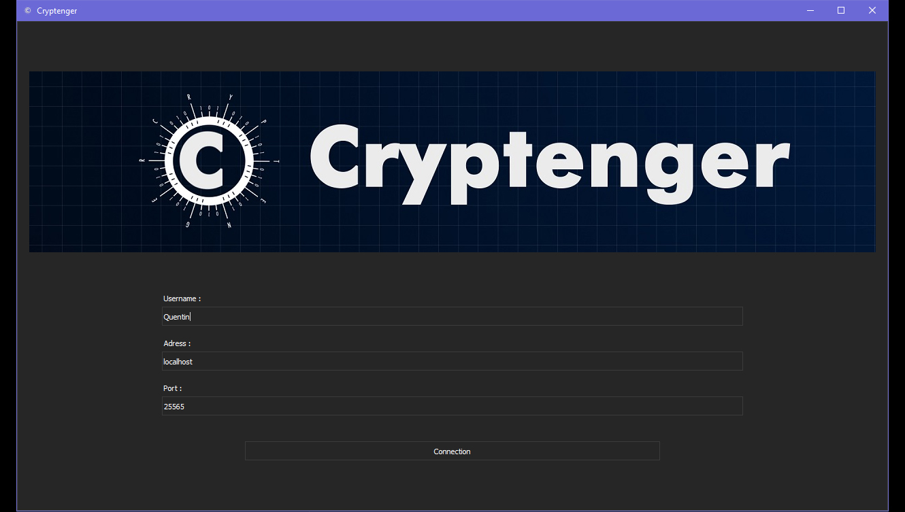
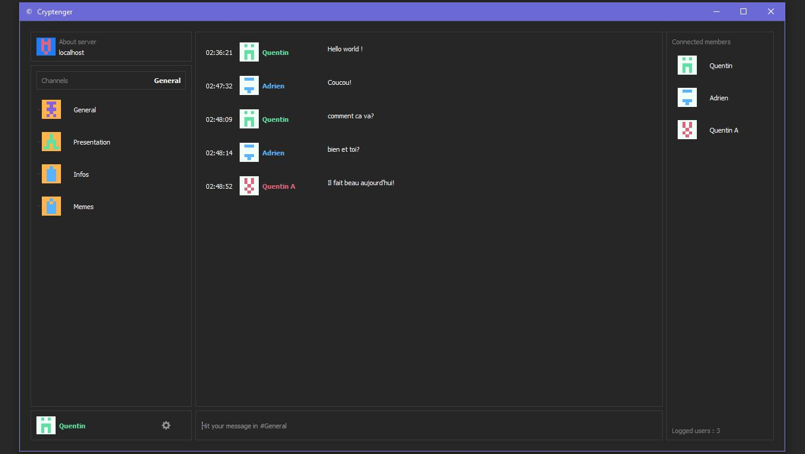
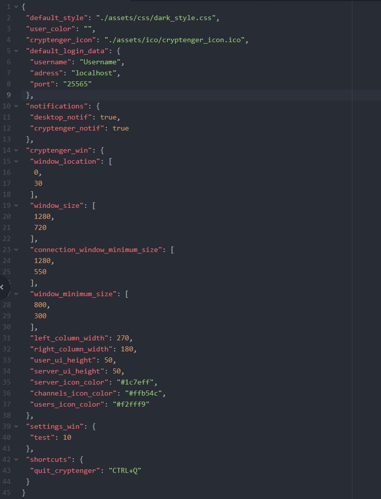
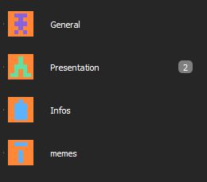

Intro
Ce projet est réalisé dans le cadre du baccalauréat 2020.
Le but est de réaliser une application de chat cryptée. Nous avons appelé cette application Cryptenger.
Répatition des rôles
L'équipe est composée de Quentin A, d'Adrien Luitot et de moi-même.
Globalement, je me suis occupé de l'aspet graphique avec PyQt5 et de l'organisation globale du client. Quentin A s'est lui occupé du serveur et de la base de la réception du client, et Adrien s'est lui occupé de la cryptographie. Je me suis aussi occupé des bannières, du logo, et de l'intro du futur trailer de l'application. A terme, un site officiel sera disponible sur Cryptenger.
Cryptenger est divisée en deux fenêtres principales. La première est l'écran de connection ou l'utilisateur entre son pseudonyme, l'adresse du serveur, et le port du serveur. On peut avoir un aperçu de cette fenêtre sur l'image ci-dessous.
Si l'utilisateur ne rentre pas une des informations Cryptenger lui dit laquelle il a oubliée.
Après avoir cliqué sur connection ou avoir pressé entrée, Cryptenger lance la connexion et la fenêtre pincipale apparaît.
En haut à gauche nous avons les infos sur le serveur qui apparaissent, en dessous la liste des différents channels (envoyée par le serveur), en dessous les informations sur l'utilisateur. Au centre la liste des messages du channel actuel apparaît. En dessous nous avons la zone de saisie du message. Enfin, à droite, nous avons la liste des membres actuellement connectés au serveur.
Pour les icons nous avons utilisé le principe des Identicons. Cela signifie les formes et la couleur de l'icon sont générées en fonction d'un texte choisis, soit dans notre cas du nom du serveur, du channel ou de l'utilisateur. Afin de différencier seveur, utilisateur, et channel, nous avons changé les arrière plans des icons. Aussi, chaque nom d'utilisateur a un icon et une couleur difféente.
Toutes les settings tels que les dimentions des fenêtres et "zones" des fenêtres, ou encore la couleur des icons sont stoqués dans des fichiers json.

On peut voir l'actuel channel marqué en haut de la liste des channels en gras, ainsi que dans la zone de saisie.
En ce qui concerne la connection, nous utilisons les modules socket et select de la Standard Library de python. Pour la cryptographie nous utilisons pycryptodome avec un système de chiffrage à clés symétriques et asymétrique.

Les notifications
(Work In Progress)